A
ARTICULATION- the manner in which a note is performed tempo
...
C
CLEF - a sign that helps organize the staff so notes can be easily read
CODA - the concluding passage of a piece of or movement, typically forming an addition to the basic structure
...
D
DECRESCENDO - (decresc.) gradually softer
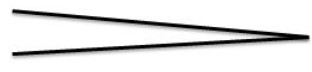
DIMINUENDO - (dim.) gradually softer
D.S. DAL SEGNO - repeat from the sign
...
F
FERMATA - hold the note for longer that its normal value
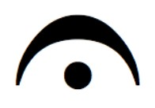
FINE - the end
FIRST & SECOND ENDINGS - play through the 1st ending to the repeat sign, then go back to the beginning. When repeating, skip the 1st ending and play the second.
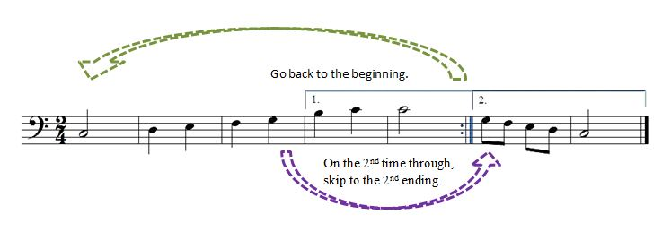
FLAT - lowers the pitch by one half step
FORTE - loud and full
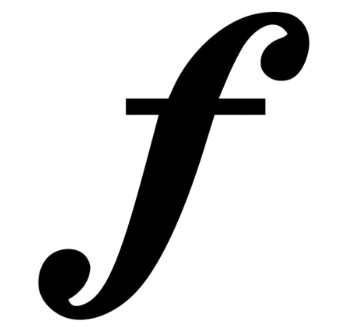
FORTISSIMO - very loud and full
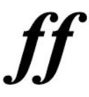
...
G
GRAND STAFF - the treble and bass staff connected by a brace and a line

...
H
HALF NOTE - the treble and bass staff connected by a brace and a line
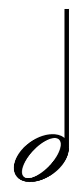
HALF REST - the treble and bass staff connected by a brace and a line
...
L
LEDGER LINE - short lines which are added to extend the range of the staff when the notes are too low or too high to be written on it
LEGATO - to play or sing 2 or more notes smoothly/connected
...
M
MEASURE - the area between two bar lines
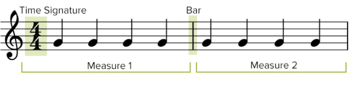
MEZZO FORTE - moderatly loud
MEZZO PIANO - moderatly soft
MODERATO - moderatly
...
N
NATURAL - the natrual sign before a note cancels a previous flat or sharp
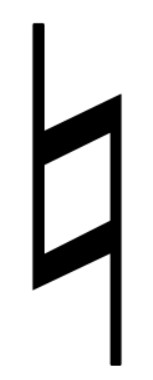
...
P
PIANISSIMO - very soft
PIANO - soft
...
Q
QUARTER NOTE - a note that recieves 1 beat in 4/4 time
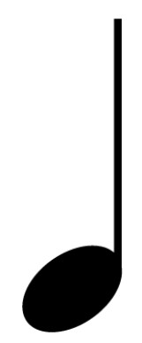
QUARTER REST - recieves 1 beat of restin 4/4 time
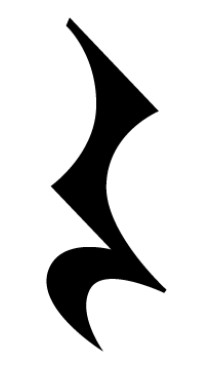
...
R
REPEAT SIGN - return to the beginning or the previous repeat sign
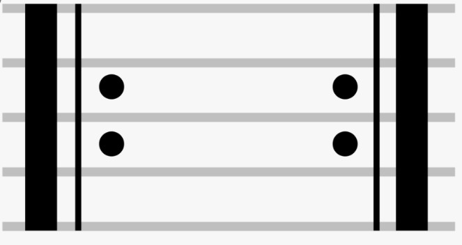
RITARDANDO - (ritard. or rit.) gradually slower
...
S
SFORZANDO - (sf or sfz) a sudden strong accent
SHARP - raises the pitch by one half step
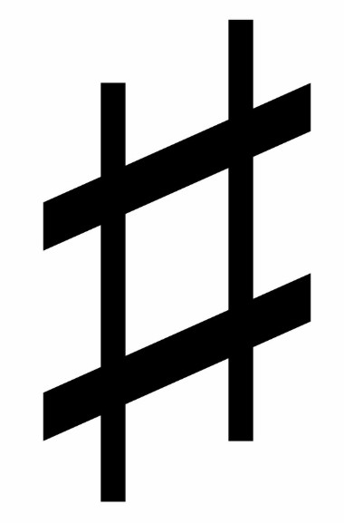
SLUR - smoothly connects two or more notes of different pitches by a curved line over or under the notes
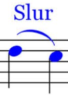
STACCATO - perform the note short and detached
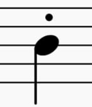
STAFF- the five lines and the four spaces between them on which music and other symbols are written
...
T
TEMPO - a word meaning "rate of speed", how fast or slow to play the music.
TENUTO - hold the note for its full value
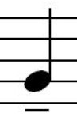
TIE - two notes of the same pitch joined by a curved line over or under the note. Each note joined by a tie is held for its full value but only the first note is play or sung

TIME SIGNATURE - appears at the beginning of the music after the clef sign. It contains two numbers. The upper number tells how many beats are in each measure; the lower number indicates what type of note recieves 1 beat.
TREBLE CLEF - G Clef the clef used for notes in the higher pitch ranges
...
V
VIVACE - lively and fast
...
W
WHOLE NOTE - the treble and bass staff connected by a brace and a line
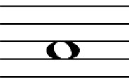
WHOLE REST - the treble and bass staff connected by a brace and a line
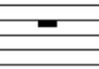
...